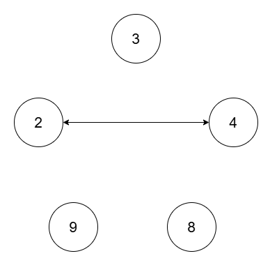
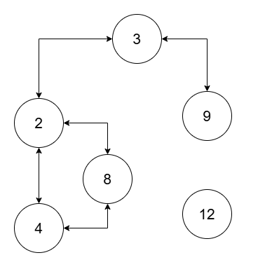

| Category | Difficulty | Likes | Dislikes |
|---|---|---|---|
| Algorithms | Hard | 80 | 2 |
array | hash-table | math | union-find | number-theory
You are given an array of integers nums of size n and a positive integer threshold.
There is a graph consisting of n nodes with the ith node having a value of nums[i]. Two nodes i and j in the graph are connected via an undirected edge if lcm(nums[i], nums[j]) <= threshold.
Return the number of connected components in this graph.
A connected component is a subgraph of a graph in which there exists a path between any two vertices, and no vertex of the subgraph shares an edge with a vertex outside of the subgraph.
The term lcm(a, b) denotes the least common multiple of a and b.
Example 1:
Input: nums = [2,4,8,3,9], threshold = 5
Output: 4
Explanation:

The four connected components are (2, 4), (3), (8), (9).
Example 2:
Input: nums = [2,4,8,3,9,12], threshold = 10
Output: 2
Explanation:

The two connected components are (2, 3, 4, 8, 9), and (12).
Constraints:
1 <= nums.length <= 1051 <= nums[i] <= 109nums are unique.1 <= threshold <= 2 * 105